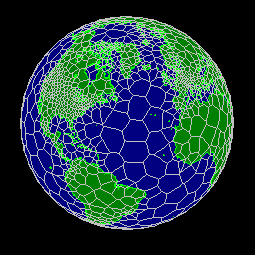
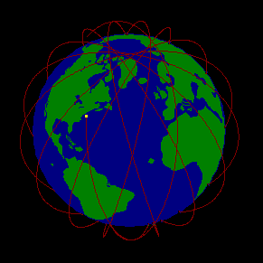
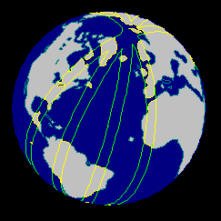

Last updated November, 2010.
Information in this document is subject to change without notice.
Hipparchus® is a registered trademark of Geodyssey Limited.
© Copyright 1992-2010 by Geodyssey Limited.
All rights reserved, worldwide.
Hipparchus® (our product) is an "open" function library that has provided C/C++ and other application developers with the tools to deal with the "where" of things. And, for the first time, recognizes the ellipsoidal shape of the Earth. Hipparchus is the component that provides seamless, lightning-fast access to your geographic databases, "in-the-blink-of-an-eye" rendering of geographical scenes, and (possibly more importantly), an incredibly fast, yet very precise, geospatial calculus. Co-existing with your chosen graphical user interface (GUI) and database management system (DBMS), Hipparchus communicates with your application via C/C++ memory structures.
Scalability is assured because Hipparchus Library functions are 100% re-entrant! This means that Hipparchus-based geographic applications can be multi-threaded. Which, in turn, means that your Internet/Intranet server application will be 100% scalable, (so far as our part is concerned)!
Hipparchus provides full geographic functionality without forcing a packaged approach. New or existing applications can now deal with the geography of things without requiring the use of the monolithic solution.
As never before, Hipparchus can add geography to all kinds of applications: be they embedded, mobile, desktop, desktop client, server, scalable multi-threaded server mainframe. Read on to see just how we can make this claim!
Return to Table of Contents
Geographic Objects
Most people equate geography to maps. Although maps are interesting to
study, their images provide no information a computer can use directly.
Merely manipulating map images is not enough. You need a tool that puts
numbers to the location of things.
With Hipparchus, you deal with the "where" attribute by modeling things as points, lines or regions on or near the Earth's surface. The objects you model might be permanent geographic features such as oil wells, roads or land parcels or they might be more changeable elements such as customer locations, flight paths or cloud cover. In the Hipparchus context, an object generally represents a set of things, not just a single element.
Within Hipparchus, geographic objects are constructed and manipulated as memory-resident structures, their external form being entirely managed by you, the developer. An object is defined by the geographic coordinates of its various parts. Objects may be modeled without geographic restriction. They can describe features as small as a bread box or as large as a planet. Line sets and the boundaries of regions may be described by any number of linear segments of any length. Region objects may be non-simply connected, to any level of topological complexity. For example, a region that models the dry land of an island group might define a lake within an island within a lake within one of those islands, and so on.
Attribute data can be associated with the point or vertex coordinates defining the object. For example, to model a three dimensional object (such as a mountain range), the obvious attribute to associate with all those point coordinates would be elevation.
Coordinate-associated attributes may be indirectly referenced by pointers.
Coordinate System
The internal coordinate system is the very soul of an engine such as this.
Most systems use a "flat-Earth" or map-sheet paradigm and work with planar
x-y coordinates. By contrast, Hipparchus works with a geocentric coordinate
system based on direction cosines. Once cast into this form, object point or
vertex locations are manipulated using a vector algebra that most notably
does not include transcendental functions. Besides being much
faster, calculations are numerically stable anywhere on the planet's surface
and sub-millimetric precision is easily maintained when required. Locations
and distances are calculated using a rigorous ellipsoidal geometry founded in
the science of geodesy.
Provision is made for efficient conversion both from and to conventional external coordinate systems such as latitude-longitude, state plane or UTM.
To conserve memory and to speed graphic display functions, object point or vertex locations are differentially encoded according to precision requirements. At the developer's discretion, objects can be stored externally in their encoded form, thereby significantly reducing external storage requirements and access times.
Spatial Indexing
A spatial index is a means for addressing spatial data based on its
geographic coordinates. (Just as a spatial index is normally required to
retrieve geographically-keyed objects from an external database, an internal
index is required to relate objects constructed in memory).
Conventional systems use rectangular tiles or quad-trees for their index. Given the latitude and longitude of an item, one can determine which tile or quad contains the item.
Hipparchus uses an entirely different spatial index. For its internal navigation, Hipparchus uses an adaptation of the Voronoi tessellation of the plane. Also known as Thiessen polygons, this method of subdivision of a map is used routinely by geographers to study the influence of proximity to points of interest such as trade centers and the like. We have redefined the Voronoi tessellation so that it subdivides the surface of an ellipsoidal planet. See Spatial Data and the Voronoi Tessellation, Hrvoje Lukatela and John Russell, Dr. Dobb's Journal, December, 1992.
The Voronoi tessellation is by definition irregular. The number and geographic extent of its cells can be set up for an application such that only specified quantities of data will fall into each cell. And, should the spatial concentration of new data suggest the division of a cell, restructuring of the tessellation can be limited to that cell's immediate neighborhood.
Here's a  population-related Voronoi tessellation.
To assist in the rapid deployment of your application, Geodyssey offers a collection of pre-built Voronoi cell structures for various parts of the world at varying densities. These may be viewed and freely downloaded from our web site repository.
Spatial Relationships
To determine the where of things with respect to other things, an engine must
be capable of numerically "overlaying" objects to see where they lie with
respect to each other. The results of an overlay must be interpretable as
another object so that compound relationships can be investigated. Hipparchus
"overlay" operators can derive:
Hipparchus-derived spatial objects take on a life of their own and may freely be related to other objects or stored externally for later use.
High-performance spatial query operators can determine:
Orbit Modeling
Increasingly, application data is acquired remotely from orbiting satellites.
Reconciliation of this remotely-sensed data with other terrestrial data can
be important. As a basis for this reconciliation, Hipparchus provides a
precise third-order satellite orbit modeler. Using vector algebra, this
orbit modeler calculates successive orbital positions from the classical
parameters, accounting for the three most significant motions: elliptical
eccentricity, precession and the rotation of apsides. Here's the trace of
several passes of a near-polar orbiting satellite (8k).

Orbit modeler functions can create terrestrial objects such as nadir traces and sensor swath regions. These objects may then be displayed or combined with other terrestrial objects using the general spatial operators. Here's an example of the combined sensor swaths of four passes of a remote-sensing satellite. The combined swaths have been intersected with the land mass region to produce a new region - the land seen by this bird during those four sensor swaths.

The Hipparchus orbit modeler relates a satellite's position in orbit to its defined epoch date and time. The Hipparchus Libraries are Year 2000 compliant. Dates used by the orbit modeler are encoded as binary values that will endure until the year 2079.
Geographic Rendering
The Hipparchus Library provides functions for the cartographic mapping
and unmapping of data between an ellipsoidal planetary surface and other
systems such as state plane, UTM or a conformal sphere. In addition, affine
transforms provide the means to map back and forth between tangential and
other arbitrary, non-tangential planes, such as those typically encountered
in aerial or satellite imagery.
The Hipparchus Auxiliary Library provides a rich repertoire of graphic rendering functions that include mapping/unmapping to/from a variety of common projections such as gnomonic, stereographic, orthographic, local or world-wide Mercator, Lambert-like and Miller-like.
Terrestrial features (and orbit positions) may be displayed or plotted in the context of latitude-longitude grids or Voronoi tessellations. For continental-scale applications, the supplied world coastlines data may be used to provide geographic orientation.
Rendering functions can take advantage of the knowledge of your display's pixel domain, both in speeding the rendering of "straight" lines and in unmapping to surface coordinates the position of a display pixel indicated by a mouse. This information is communicated to Hipparchus via Hipparchus pseudo-window control structures.
With these and the afine transform ("rubber sheet") functions of the Hipparchus Library, you can draw vector data on bit-mapped aerial or satellite imagery or, with a mouse, perform heads-up vector data digitizing from such imagery.
Hipparchus Auxiliary Library rendering functions do not interface directly with the GUI but instead supply to (or obtain from) the application the pixel coordinate information that the application must then supply to (or which the application has already obtained from) the GUI. In this way, Hipparchus remains independent of the GUI. The application is the "glue" that binds the two. Only the most primitive display operators are assumed, the most complex being a convex polygon fill used in region object fill functions. Rendering for hard copy assumes only an HP/GL-2-compatible printer/plotter.
Of course, unusual projections can always be handled outside Hipparchus using conventional library functions such as those available from the US Geological Survey (USGS). Hipparchus's design permits easy integration of such computations.
Data Structures
All data structures referenced by the Hipparchus libraries are defined in
supplied header files. These #include files provide the required definitions
for:
Linking programs with the Hipparchus Library is straight forward.
Hipparchus Library functions are structured just like any other
linkable library function. All Hipparchus linkage references are visible to
your application.
If required, you can link Hipparchus Library functions into DLL's or
other run-time accessible components.
If you use the direct Win32 interface, you will find a wealth of relevant
integration code in the source for Columbus, Galileo and
Georama.
Nevertheless, your application may take significant advantage of the
Hipparchus internal cell index by using it for the DBMS external geographic
index. By using the Voronoi cell identifier as an external key (a simple
integer), you can provide precise navigation instructions to the DBMS.
A location query put to Hipparchus in any coordinate system can be returned
to the application in terms of these owner-cell identifiers. In particular,
whenever the application defines a specific graphical view of the Earth,
Hipparchus returns a list of identifiers of cells known to contain objects
in that view. This permits the strategic pre-fetching of in-view object
coordinate data.
Coordinate data for objects contained in a cell is typically stored and
retrieved from the DBMS as binary large objects (BLOBs). Combining this
storage technique with the efficient internal coordinate formats used by
Hipparchus can lead to exceptionally dense and fast external databases.
Since a large part of your geographic vector data will be either static or
updated only periodically, you may opt to forgo a DBMS for this data and
instead provide your own access code. For demonstration purposes (and maximum
portability), we have implemented one such schema using only the standard C
run time stream I/O and binary search facilities. We call this the Hipparchus
PLR file schema. Currently, the schema supports access to static collections
of points, lines and regions. Several Hipparchus Auxiliary Library
functions (among those prefixed h8) support access to files
constructed according to the schema. Supplied utility
programs may be used to construct (load) the files in the context of
specific Voronoi index structures. The schema may be seen (and felt) in both
Galileo and Georama.
Multiple Voronoi cell structures may be active in a single application. This
enables an application to retrieve and process spatial data from local
databases or remote server databases that are indexed using different Voronoi
tessellations.
Note that if your operating system supports memory-mapped files, you may
choose to save and access Hipparchus objects directly, thus bypassing the
need for a DBMS. If you use the direct Win32 interface, you will find a
wealth of useful memory-mapped file access code in the source code for
Galileo and Georama.
After your main application-related data has been defined, you may then be
looking for background data. This is available from a large number of
sources, many of them public. And many of them downloadable from the
Internet.
An outstanding example of public-domain vector data is the CD-ROM offering of
the US Dept of Transportation's National Highway Planning division. This free
CD-ROM includes not only the geographical coordinates defining the shape of
every state or inter-state highway in the US but the description and logic of
the nodes and links making up the network (all good to about 80m on the
ground!). For good measure, they have thrown in a whole lot of other data
such as state and county borders, coastlines, rivers and lakes, municipal
boundaries, municipal transit routes, national railways, ports, airports,
Amtrak stations, highway/rail transfer facilities and major city place
names.
Another example is the Digital Chart of the World (DCW) published jointly by
the Defense Mapping Agencies of the USA, UK, Australia and Canada. Point,
line and region objects describe seventeen themes such as spot elevations,
coastlines, rivers, roads, railways and populated places. Digitized primarily
from 1:1,000,000 Operational Navigational Chart (ONC) cartography used by
flyers the world over, the coordinate data extracted from this source might
not be precise enough for operational use in your application. However, it
might well be used to add graphic orientation for your users.
Last, an increasingly relevant source of raw coordinate data is the Global
Positioning System (GPS) radio receiver. Now priced as a consumer item, these
satellite signal receivers can locate themselves to within meters on the
ground with a sampling rate of about once per second, ideal for recording the
path of moving vehicles. To demonstrate the practicality of this approach to
vector data acquisition, we have provided the GPS-ready Hipparchus Atlas
application called Georama. Just fire up your lap-top
with Georama, plug in your GPS and go for a drive. Besides recording
your route for future use, Georama provides instant moving map
displays of your current position! For orientation purposes, we have
reprocessed the key theme data of the USA and World CD-ROM's mentioned above
to provide in one Georama CD-ROM not one but two GPS-ready Atlases.
Here's a comprehensive guide to US and World data sources available on the Internet.
From whatever source, you will in all probability need to massage your vector
data somewhat to fit into your database. This is generally not too difficult
a task, often only a few hours or days of elementary programming. You will
generally be wanting to present your application with coordinate data
expressed in terms of latitudes and longitudes, but often you may settle for
inputs in other systems such as state plane or UTM.
Columbus is a very basic geographic viewer
application that could be considered as the Hipparchus equivalent of the
timeless "Hello World" program. (You could call this one "Hello ROUND
World"). Its purpose is to demonstrate elementary techniques for displaying
geographic data. Columbus is currently provided in source for a number of
graphics platforms: Win32, WinCE, Motif/XWindows, OpenGL and GTK+.
Galileo for Windows is the
Hipparchus Programmer's Workbench (replacing the Hipparchus Application
Prototyper suite of prior releases). Galileo is a scriptable,
interactive GIS programmer's workbench that permits direct manipulation of
application data demonstrating most of the functionality of the Hipparchus
Libraries. Galileo provides the developer with a wealth of source
code examples of how best to interface an application with the Hipparchus
Libraries. Scripts supplied with Galileo provide interesting
on-line introductions to the power of Hipparchus, suitable for presentation
to prospective clients. Using the comprehensive Galileo User's Guide, the
developer can easily modify existing scripts or author new ones more closely
matching the requirements of the client. You can freely download a
full-function copy of the Galileo Win32 executables and demo
data
Georama for Windows is a CD-ROM based
end-user Atlas viewer that permits seamless browsing of World or USA Atlas
material. Besides its seamless zoom and pan viewing of the various themes
(layers) of the Atlases, Georama offers mouse inspection of feature
attributes and scene centering by place-name or real-time GPS input. Outputs
include full color screen shots and cartographic quality laser plots.
Although directly executable from the CD-ROM, Georama may be set up for
partial or exclusive operation from the hard disk. Georama is extensible
without programming. Using a simple ASCII file control mechanism, the
developer/user can change the content and style of scenes and/or add new
client-specific data to the scenes. There is an extensive on-line Georama User's Guide. (You can freely download ... Georama
for New Zealand, a Georama mini-atlas of downloadable size).
Although Galileo and Georama are written explicitly to the
Win32 interface standard, their supplied application source code demonstrates
the clean separation of interfaces between the GUI, the application, the
Hipparchus Auxilary Library and the Hipparchus Library proper.
(Developers for any of the Win32 platforms may find that their application
can be fully deployed by simply modifying one or other of the above source
suites).
Here is the Utilities Guide.
In addition, several ASCII text files list library functions by their long
names, link names and descriptive keywords-in-context. An ASCII HP-GL/2-
compatible file provides diagrams for the more complicated Hipparchus
structures in a form that can be printed on most popular laser printers
(using the PC-8 symbol set).
Here are the function lists.
Compiling and Linking
In general, Hipparchus applications can be compiled with any ANSI-compliant C
compiler that produces object modules compatible with the object modules that
make up a particular Hipparchus Library binary distribution.Memory Management
Depending on the complexity of the application, you will require from 25K to
150K RAM for residence of the library functions linked with your application.
The system memory heap is the only run-time resource that the
Hipparchus engine allocates directly. (And be assured that Hipparchus is a
careful consumer of this resource). Dynamic memory requirements will depend
mainly on the size of your Voronoi index structure and on the number and size
of the objects that you keep in memory simultaneously.GUI Integration
Not everyone uses a graphical user interface (GUI). However, if your
application needs or is predicated on a particular GUI, Hipparchus enables
easy integration. The integration is done by your application program which
controls the interactions between the user, the GUI and Hipparchus.
Typically, Hipparchus provides the GUI with graphics information by
projecting selected geographic surface features into the pixel domain of the
display. Hipparchus can also "unmap" mouse-selected display pixels into
surface coordinates. (Although there is no direct communication between
Hipparchus and the GUI, the developer can describe the location, scale and
pixel extent of Hipparchus pseudo-windows).DBMS Integration
There are no special integration requirements for binding Hipparchus with
your database management system (DBMS). Hipparchus does not communicate
directly with any DBMS. Instead, your application manages the storage and
retrieval of data from the DBMS. Your application extracts location
attributes from the external database and passes these to Hipparchus via
internal memory structures. Similarly, geographic results produced by
Hipparchus are passed back to your application via internal memory
structures. If results are to be stored externally, your application selects
them from their memory structures and presents them to the DBMS for external
storage.Geographic Data
A study of your application data is your quintessential first step in the
creation of any Hipparchus-based application. You will need to define the
sources, volumes and precision requirements of your data, as well as what you
intend to do with it. Once familiar with the spatial operators available with
Hipparchus, you may consider different application approaches requiring
entirely different sources of data.Rapid Application Development Tools
To provide additional insight into the power of Hipparchus, several
interactive programs are provided that showcase nearly all of its functions.
For maximum clarity, these programs use simple stream I/O files for external
object storage and the Win32 API. The programs are called Columbus,
Galileo and Georama.Utilities
As an aid to data preparation for the Hipparchus-based application, a suite
of Hipparchus-based utility programs is provided. These are command-line
batch programs written in ASCII C for maximum portability. They divide into
five categories:
The Hipparchus Utilities are distributed in source and are largely self
documented, both in the source code and at run time.Documentation
Hipparchus documentation is now 100% machine readable as HTML documents. The
following publications accompany Hipparchus:Platforms
The Hipparchus Library was available for:
Function Lists
Hipparchus functions were distributed in two collections: the core
Hipparchus Library (binaries only) and the Hipparchus Auxiliary
Library (source only). Hipparchus functions are fully re-entrant, ready
for incorporation into either client or server applications, single- or
multi-threaded. All Hipparchus Library and most Hipparchus
Auxiliary Library functions were formally documented by the Hipparchus
Library Reference Manual, which was shipped with the product.